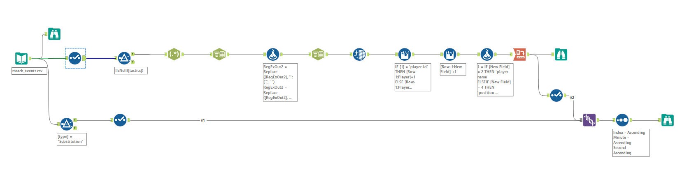
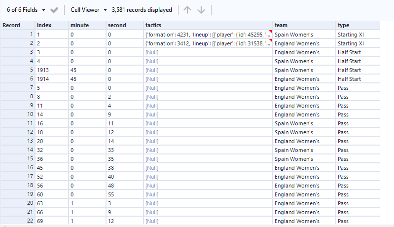
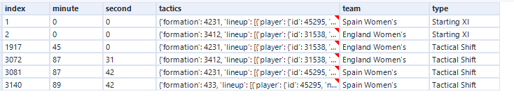
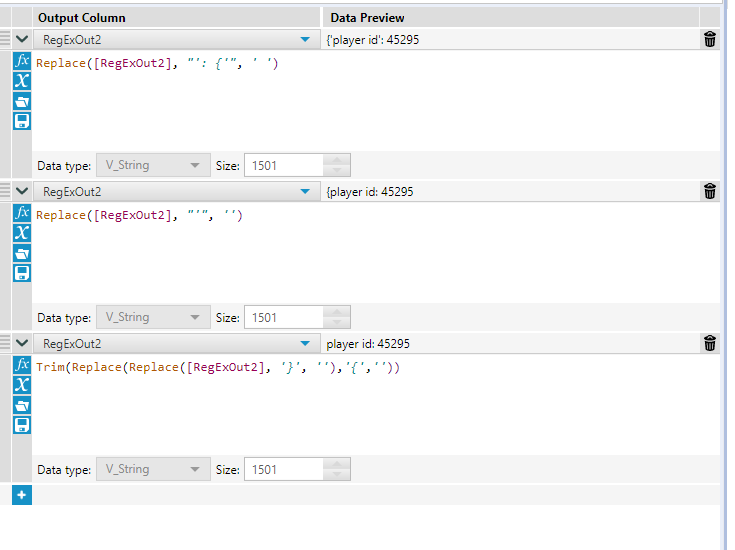
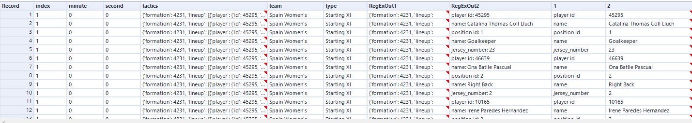
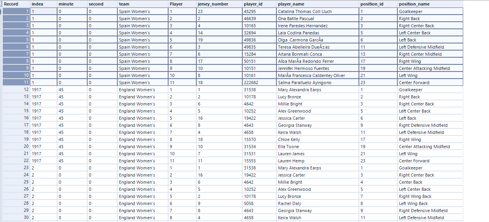
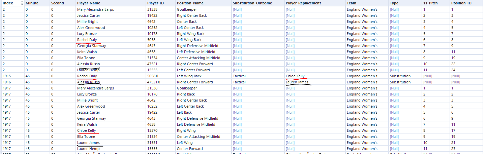

StatsBomb Substitutions & Tactics (Alteryx)
Hi all,
An Alteryx flow blog this week looking at preparing data ready for use.
As many of you are aware, Statsbomb have made some data free for use within the public domain. Todays tutorial we will revisit the Women's World Cup and look at recording substitutions and changes in tactics as part of the match events data that can be pulled directly from their Git Repo.
If you'd like to follow along, by all means the workflow, starting and end dataset are all found in the repository.
It is worth mentioning there is an easier way of pulling back some of the records, such as the line up and that is through python. You can find how to convert the json into a readable format on the mplsoccer website, it consists of the following line of code
df_lineup = parser.lineup(7478)
Anyway. Here I want to help those without a coding background to make their own transformations.
Lets look at the workflow and data.
We want 3 things from today:
- To log every substitution
- To log whether that substitution then impacts a change in tactics
- To create a condensed output file to be able to showcase those 2 things occurring.
Connect to the match events data.

First thing we do in the top of the flow is filter out some of the noise. Always important as generally we don't want to bring fields we don't need.

First thing to notice is the tactics field is stored in a json format. The cell is also truncated meaning we are at risk of the string cutting off some of the details.
In this case we click back on our match_events input and change the field length to be longer than the json would be (in this case i set it to 4000)
We then look to filter our data to only the tactics.

Here is a sample example of the tactics field
{'formation': 4231, 'lineup': [{'player': {'id': 45295, 'name': 'Catalina Thomas Coll Lluch'}, 'position': {'id': 1, 'name': 'Goalkeeper'}, 'jersey_number': 23}, {'player': {'id': 46639, 'name': 'Ona Batlle Pascual'}, 'position': {'id': 2, 'name': 'Right Back'}, 'jersey_number': 2}, {'player': {'id': 10165, 'name': 'Irene Paredes Hernandez'}, 'position': {'id': 3, 'name': 'Right Center Back'}, 'jersey_number': 4}, {'player': {'id': 32694, 'name': 'Laia Codina Panedas'}, 'position': {'id': 5, 'name': 'Left Center Back'}, 'jersey_number': 14}, {'player': {'id': 49836, 'name': 'Olga Carmona GarcÃa'}, 'position': {'id': 6, 'name': 'Left Back'}, 'jersey_number': 19}, {'player': {'id': 49835, 'name': 'Teresa Abelleira Dueñas'}, 'position': {'id': 11, 'name': 'Left Defensive Midfield'}, 'jersey_number': 3}, {'player': {'id': 15284, 'name': 'Aitana Bonmati Conca'}, 'position': {'id': 13, 'name': 'Right Center Midfield'}, 'jersey_number': 6}, {'player': {'id': 50151, 'name': 'Alba MarÃa Redondo Ferrer'}, 'position': {'id': 17, 'name': 'Right Wing'}, 'jersey_number': 17}, {'player': {'id': 10151, 'name': 'Jennifer Hermoso Fuentes'}, 'position': {'id': 19, 'name': 'Center Attacking Midfield'}, 'jersey_number': 10}, {'player': {'id': 10161, 'name': 'MarÃa Francesca Caldentey Oliver'}, 'position': {'id': 21, 'name': 'Left Wing'}, 'jersey_number': 8}, {'player': {'id': 222682, 'name': 'Salma Paralluelo Ayingono'}, 'position': {'id': 23, 'name': 'Center Forward'}, 'jersey_number': 18}]}
Now whilst I would love to use the Json parse too to solve this challenge, it doesn't always work as expected depending on the format of the json (not to mention id have to do a string replace for the quotations to be double quotes), so we have to turn to some regex to be able to split the different parts of the data we need.
At this point a major thank you goes to my colleague Filip Rutkowski. I don't have the coding patience I use to... ha. The regular expression needed is (.*)\[(.*)]
(.*) - This part matches zero or more occurrences of any character (except newline) and captures it within a group. The . matches any character, and * quantifier means "zero or more occurrences". So, (.*) captures any sequence of characters.
\[(.*)] - This part matches the opening square bracket [, followed by zero or more occurrences of any character (except newline), and captures it within a group. The . matches any character, and * quantifier means "zero or more occurrences". So, (.*) captures any sequence of characters within the square brackets. Finally, \] matches the closing square bracket ].
What this will do is trim off the start to the formation and line up part of the string.

By following the above formula tools and a further regex column to split on the : delimiter, we can start to split out field names and values like below

It's then a case of using the cross tab to transform the data.

See how we now have the starting 11 for each team. Scrolling further we see that it also has changes in tactics too and what the 11 players for that would look like.
The final thing we want to do is add in the substitutions, to add context to the tactics that take place.
You will see the bottom half of the flow looks at where type = Substitution.
We then do some renaming conventions to both our parts of the flow before doing a union to glue them together

Take the above example, we see Chloe Kelly and Lauren James sub on at half time and the tactic / line up change and we log both those events in our final dataset.
Hopefully you enjoyed some of the complexities
Taking It Further:
- Create a minute by minute dataset for which players are on the pitch
- Consider metrics on how you could measure the impact of a substitution
- Try convert the alteryx workflow into a code of your choosing
LOGGING OFF,
CJ